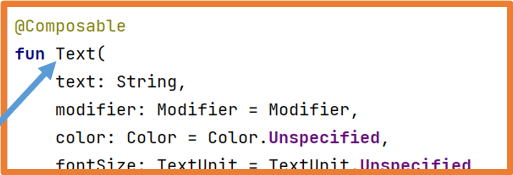
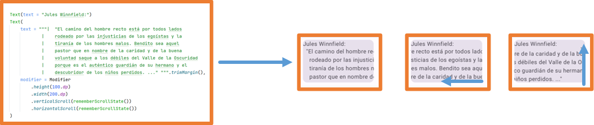
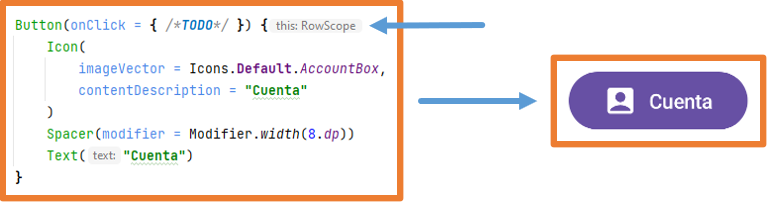
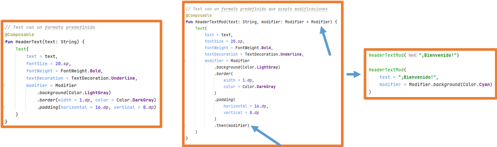
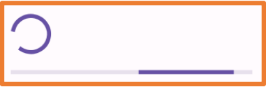
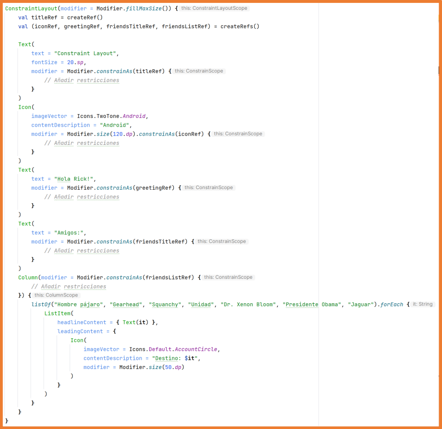
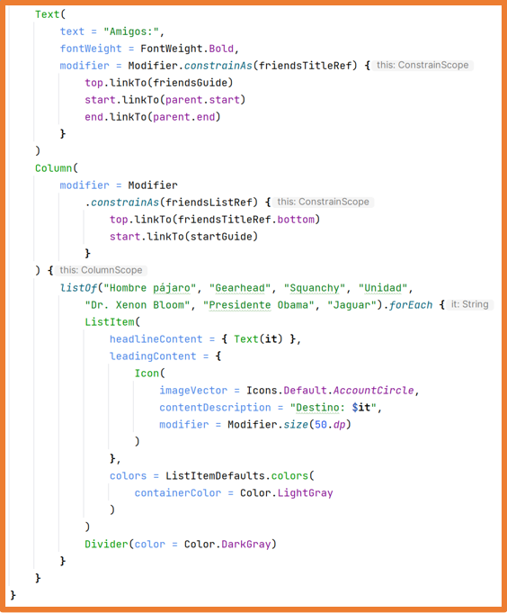

Antes de profundizar en los componentes de Jetpack Compose, es importante mantener organizado el código de la aplicación. Por tanto, tenga en cuenta lo siguiente:
Puedes crear tantos ficheros como necesites.
Si la aplicación tiene varias pantallas, cada pantalla debe tener su propio código de interfaz en un archivo separado.
El fichero que contiene una clase que extiende Activity no debe incluir componentes de UI.
Debes crear un componente que sirva como base de la aplicación para que pueda usarse en cualquier sitio.
Todos los archivos que contengan componentes de interfaz deben colocarse en la carpeta ui.
Si varios componentes pertenecen a la misma área/sección de la pantalla, crea un componente que los agrupe.
Siempre que un componente se repita con los mismos ajustes de estilo, crea un componente personalizado que lo extienda.
Para ilustrar todo lo anterior, modificaremos el proyecto de Click Counter de la U6 para cumplir con los puntos anteriores. Además, a partir de ahora, especificaremos dónde debe colocarse cada elemento estudiado.
El primer paso es crear un nuevo elemento Composable llamado
ClickCounterContent:
Haz clic derecho en la carpeta ui→ Nuevo → Clase/Archivo Kotlin.
A continuación, este componente debe ser utilizado desde la función onCreate del
MainActivity:
De esta manera, cada vez que se crea una nueva pantalla o se quiere previsualizar un componente, se debe usar
el componente ClickCounterContent, y se preservará el estilo de la aplicación.
Ahora, es momento de renombrar la función Content a ClickCounter.
También debes cambiar sus llamadas tanto en la función onCreate como en la previsualización.
Por último, moveremos la función ClickCounter a un archivo separado.
Haz clic derecho en la carpeta ui → Nuevo → Paquete.
Ingresa el nombre del paquete: screens y presiona Enter.
Haz clic derecho en la nueva carpeta screens → Nuevo → Clase/Archivo Kotlin:
Ingresa el nombre del archivo: ClickCounter, selecciona la opción Archivo, y presiona Enter.
La función ClickCounter y la previsualización ClickCounterPreview
se eliminan de MainActivity.kt y se colocan en el archivo ClickCounter:
ClickCounter.kt
@Composable
fun ClickCounter() {
var times by rememberSaveable { mutableStateOf(0) }
Column(
modifier = Modifier.fillMaxSize(),
verticalArrangement = Arrangement.Center,
horizontalAlignment = Alignment.CenterHorizontally
) {
Text(
// text = "has hecho clic $times veces",
text = stringResource(
R.string.counter_text,
times
),
fontSize = 25.sp
)
Spacer(modifier = Modifier.height(20.dp))
Button(onClick = {
times++
Log.i(
BUTTON_CLICK,
"Button pressed. Value of times: $times"
)
}) {
Text(
text = stringResource(id = R.string.clickme),
fontSize = 30.sp,
modifier = Modifier.padding(16.dp),
)
}
Spacer(modifier = Modifier.height(20.dp))
Button(
onClick = {
times = 0
Log.i(
BUTTON_CLICK,
"RESET pressed"
)
},
shape = RectangleShape,
colors = ButtonDefaults.buttonColors(
containerColor = Color.White,
contentColor = Color.Black
),
border = BorderStroke(
2.dp,
Color.Red
),
enabled = times != 0
) {
Text(
text = stringResource(id = R.string.reset),
fontSize = 15.sp,
modifier = Modifier.padding(2.dp),
)
}
}
}
@Preview(
name = "Light Mode",
showBackground = true,
showSystemUi = true,
)
@Preview(
name = "Dark Mode",
showBackground = true,
showSystemUi = true,
uiMode = Configuration.UI_MODE_NIGHT_YES
)
@Preview(
showBackground = true,
name = "English",
)
@Preview(
showBackground = true,
name = "Spanish",
group = "locale",
locale = "es",
)
@Composable
fun ClickCounterPreview() {
MyAppContent {
ClickCounter()
}
}
De esta manera, la estructura del proyecto se vuelve más organizada.
Si una pantalla va a estar compuesta por múltiples archivos, se recomienda crear un nuevo paquete (con el nombre de la pantalla) dentro de la carpeta screens.
Si algunos componentes se comparten entre diferentes pantallas, debes crear un nuevo paquete llamado common, share, o partials y colocar esos componentes dentro.
Los componentes de Jetpack Compose se pueden clasificar de forma no oficial en dos tipos:
Layout
They allow organizing elements of the graphical interface
Box
Surface
Column
Row
Card
ConstraintLayout
Scaffod
TopAppBar
BottomBar
ModalDrawer
LazyColumn
LazyRow
LazyVerticalGrid
LazyHorizontalGrid
LazyVerticalStaggeredGrid
LazyHorizontalStaggeredGrid
...
Information Presentation
They allow displaying information to the user.
The user can interact with them.
Text
TextField
Button
Image
Spacer
Switch
Slider
CheckBox
RadioButton
ElevatedButton
Icon
IconButton
SnackBar
BadgedBox
Slider
FloatingActionButton
...
En la unidad anterior, ya se han utilizado algunos componentes de Jetpack Compose: Column,
Row, Text, Button, Spacer, Surface.
Toda la interfaz de las aplicaciones se creará con:
Componentes ofrecidos por Jetpack Compose
Componentes personalizados de Jetpack Compose creados al extender y agrupar
los componentes ofrecidos por Jetpack Compose.
Los componentes de Jetpack Compose son funciones etiquetadas con
@Composable.
Esto se puede observar en los componentes proporcionados por Jetpack Compose:
Para crear tu propio componente, debes crear una función etiquetada con @Composable.
Además, la documentación indica que:
Si la función @Composable no devuelve nada (el escenario más común),
su nombre debe comenzar con una letra mayúscula.
Si la función @composable devuelve algo, su nombre debe comenzar en
minúscula.

Material 3
La versión más reciente de Jetpack Compose usa Material Design 3. Material Design es un estilo de diseño de interfaces de Google.
Todos los componentes de Jetpack Compose se pueden encontrar en la documentación oficial
con un ejemplo visual y un enlace a Material
Design 3:
para que puedas ver cómo usar el componente y las guías de estilo:
El sitio web de Material Design 3 ofrece
muy importante información
sobre cómo usar los componentes en la sección de Guidelines (guías de estilo):
ExperimentalMaterial3Api
Sometimes, Jetpack Compose components are in an experimental phase but can still be used without problem.
In such cases, Android Studio will ask for this specification.
In Android Studio’s contextual help, you can specify it as follows:
At the beginning of the component containing the experimental component.
Throughout the current file.
If you want to propagate it so that the parent component also has to specify it.
Componentes Text y BasicText
Los componentes Text y BasicText permiten mostrar una cadena de texto en la interfaz.
La diferencia es que Text utiliza principios de Material mientras que BasicText no.
Su uso básico ya se ha estudiado en clase y es el siguiente:
Es importante saber cómo funcionan los componentes de Jetpack Compose. Presiona CTRL y mantenlo presionado mientras haces clic izquierdo en el nombre de la clase. También funciona si el cursor está sobre el nombre y presionas CTRL+B.
Esto abrirá el código del componente en Android Studio. Puedes hacer esto con cualquier clase, función,
o objeto…
Presionando ctrl+B en el componente para ver su definición.
Todas las funciones tienen documentación en KotlinDoc, donde se explican sus parámetros.
Al llamar a la función Text usando los nombres de los parámetros como recomienda Jetpack Compose, puedes alterar su orden.
Cuando usas componentes de Jetpack Compose, al igual que con cualquier clase que no es tuya, es importante verificar qué
parámetros tienen y cómo funcionan.
Con el cursor sobre una clase/función/parámetro/variable, presiona CTRL+B, y Android Studio abrirá el archivo
que la define para que puedas revisarlo.
Por ejemplo:
text necesita un String
modifier necesita un Modifier
fontWeight necesita un FontWeight
Navegando por los parámetros con CTRL+B, puedes aprender sobre el tipo de datos aceptado. Esto también se puede
consultar en línea en la documentación oficial.
El único parámetro obligatorio es text, la cadena que se va a
mostrar.
Todos los demás parámetros se pueden omitir (ya tienen un valor por defecto). Si los omites, Kotlin usa sus valores por defecto.
Algunos ejemplos de Text con parámetros:
Con el parámetro style, puedes configurar varias propiedades de estilo a la vez.
Aunque podrías usar los parámetros específicos como color, fontSize…
Modifier (Modificador)
Cada componente tiene el parámetro modifier.
Por defecto, el parámetro modifier contiene un objeto Modifier con una configuración básica.
El objeto Modifier es un Companion Object con numerosas
funciones de extensión para modificar componentes.
Además, es de tipo builder, por lo que puedes encadenar llamadas a estas funciones de extensión usando puntos.
El orden en el que llamas a estas funciones es importante y crea diferentes efectos.
Podemos agrupar las funciones de extensión de Modifier oficialmente de la siguiente manera:
El orden de llamada a las funciones de Modifier cambia el comportamiento:
Gracias a Modifier, todos los componentes pueden ser clicables:
El orden en que se coloca clickable también cambia el comportamiento.
Existen más controladores de eventos: onFocusChanged, onKeyEvent…
Si el contenido de un componente no cabe en la pantalla por cualquier motivo,
gracias a Modifier, puedes especificar verticalScroll o horizontalScroll
para que el contenido pueda desplazarse y verlo completamente.

Si configuras un componente para que tenga verticalScroll o horizontalScroll
que ocupa toda la pantalla, el resto de los elementos no se verán a menos que especifiques un tamaño para el componente desplazado.
Si puedes desplazarte verticalmente en un elemento, no debe haber otro elemento con desplazamiento vertical dentro de él.
Si puedes desplazarte horizontalmente en un elemento, no debes tener otro elemento desplazado horizontalmente dentro de él.
La mayoría de las funciones de Modifier se pueden usar en cualquier ámbito, pero algunas solo se pueden usar en un ámbito específico.
Componente Button
Un Button permite ejecutar una acción tras la interacción del usuario.
Tiene dos parámetros obligatorios: onClick y content, ambos son funciones lambda, y el segundo es el último parámetro para
que se pueda extraer de los paréntesis.
El parámetro content es una función lambda que toma @Composable, lo que significa que puedes poner componentes de Jetpack Compose en su cuerpo.
Además, implementa RowScope (ámbito de fila) por lo que se comporta como una Row, y cualquier componente incluido será colocado en una fila.

Button define algunos de sus valores por defecto en la clase ButtonDefaults
y para ciertas personalizaciones, debes usar esta clase:
El componente Button tiene diferentes variaciones con
estilos predefinidos:
Internamente, todos estos componentes son del tipo Button.
Componentes propios
Para mantener el código organizado, es habitual crear componentes propios que extiendan o agrupen los componentes existentes de Jetpack Compose.
Para crear tu propio componente, necesitas crear una función etiquetada con
@Composable.
Además, la documentación indica que:
Si la @Composable función no devuelve nada (lo más común), su nombre debe comenzar con una letra mayúscula.
Si la @Composable función devuelve algo, su nombre debe comenzar con una letra minúscula.
Puedes diseñar tu propio componente que combine un Modifier internamente con el
Modifier recibido como parámetro.
Al crear un componente que extiende a otro, puedes definirlo para que reciba un
modifier como parámetro, que luego se puede aplicar al componente que se está extendiendo.
Además, puedes combinar el Modifier que se recibe como parámetro
con el definido dentro del componente usando el método then.
Ten en cuenta que la ubicación en la que llames a then alterará su comportamiento.
 Donde llames a then cambia su comportamiento.
También puedes especificar que si se recibe un Modifier, se use ese; de lo contrario, se cargue uno interno.
Tus propios componentes te permiten dividir el código para una mejor organización.
Es importante que tus componentes personalizados se mantengan tan pequeños como sea posible y tengan
nombres semánticos, para que sean autoexplicativos.
Además, puedes crear componentes personalizados que agrupen otros para reutilizarlos todos a la vez y organizar mejor el
código.
Los ejemplos anteriores son ideales para entender esto.
Componente Spacer
El componente Spacer permite colocar espacio entre otros componentes y solo acepta el parámetro modifier.
Es recomendable crear tu propio componente que extienda Spacer para simplificar su uso:
Imágenes
En una aplicación Android, las imágenes deben importarse al proyecto o descargarse desde internet.
Las imágenes importadas deben estar en uno de estos formatos: vector, jpg, png, o webp.
Con respecto a las imágenes rasterizadas (jpg, png, y webp), es preferible usar el formato webp
. Así que explicaremos cómo convertir imágenes importadas en formatos jpg y png a webp.
Para agregar imágenes al proyecto, abre el panel de Resource Manager a la izquierda, luego presiona
el botón +.
Para agregar imágenes rasterizadas (jpg, png, y webp), selecciona Import Drawables.
Una vez que elijas la imagen, aparece una ventana para la importación:
Si lo deseas, puedes seleccionar un QUALIFIER, que permitirá cargar imágenes de diferentes tamaños dependiendo de las características del dispositivo.
Finalmente, presiona el botón Import y la imagen estará lista.
Para agregar imágenes vectoriales, generalmente íconos de Google, elige Vector Asset.
Se abrirá una ventana que te permitirá elegir el ícono y especificar su nombre, tamaño, color y opacidad.
Puedes elegir entre Clip art, es decir, los íconos predeterminados de Google, o
Local file si la fuente es externa.
Finalmente, haz clic en Finish, y la imagen estará lista.
Todas las imágenes importadas, sin importar su tipo, se pueden encontrar en la carpeta res
.
Si elegiste QUALIFIERS, las imágenes aparecerán organizadas según ese
QUALIFIER.
Convirtiendo imágenes rasterizadas a webp.
Google recomienda el formato webp porque está más optimizado y ocupa menos espacio.
Usar el formato webp puede reducir el tamaño de la aplicación hasta en un 80%.
El formato webp es compatible desde la API 14 con pérdida de calidad y desde la API 18 sin pérdida de calidad.
Dado que trabajamos con API 24+ en el curso, no hay problema con la calidad.
Haz clic derecho en la imagen en el proyecto:
Elige las opciones que necesites: 100% o Lossless encoding -> maximum quality.
Se muestra una vista previa que muestra la calidad final, el tamaño final y las diferencias.
También puedes ajustar la calidad final si lo deseas.
La imagen de ejemplo con calidad al 30% casi no tiene pérdida y pasa de 421.3 KB a 14.5 KB (3.5% del tamaño original).
Finalmente, presiona Finish para convertir la imagen al formato webp.
Con imágenes más grandes, la optimización es más notable.
Imagen original: 7.9 MB
Imagen final: 400 KB
Reducido al 6.1%
Componente Image
El componente Image permite cargar imágenes importadas en el proyecto.
La función tiene dos parámetros obligatorios:
painter: indica qué recurso cargar.
contentDescription: descripción de la imagen.
Usando la función Modifier.clip(), puedes dar forma a cualquier componente.
Si configuras un borde, asegúrate de establecer la misma forma utilizada en la función clip.
Si le dices a la imagen que llene el espacio disponible con el parámetro ContentScale, puedes especificar cómo debe llenar ese espacio:
Con Crop: se ajusta a la dimensión más pequeña del contenedor.
Imágenes desde Internet
Usando la librería Coil y el componente AsyncImage, puedes cargar imágenes desde internet.
Necesitas permiso de acceso a la red en la aplicación. Para ello, en el archivo
AdroidManifest.xml:
manifest -> AndroidManifest.xml debes agregar:
En el archivo libs.versions.toml:
en la sección [versions]
coil="3.0.4"
en la sección [libraries]
coil-compose = { group = "io.coil-kt.coil3", name = "coil-compose", version.ref = "coil" }
coil-network-okhttp = { group = "io.coil-kt.coil3", name = "coil-network-okhttp", version.ref = "coil" }
A continuación, agrega la dependencia al archivo build.graddle.kts (Module: app) y haz clic en Sync Now en la esquina superior derecha.
Cuando termine la sincronización, podrás usar el componente AsyncImage.
Debido a que @Preview (previews) no tienen acceso a internet, debes ejecutar la aplicación para ver el resultado.
AsyncImage tiene dos parámetros obligatorios, que son model y contentDescription.
También proporciona el parámetro contentScale para indicar cómo la imagen llena el espacio disponible.
AsyncImage también tiene el parámetro contentScale para especificar
cómo la imagen llena el espacio disponible.
Puedes dar forma a las imágenes con AsyncImage y la función Modifier.clip().
Coil ofrece la función crossfade para mostrar gradualmente la imagen:
Componente Icon
El componente Icon muestra un ícono en la aplicación, similar a una
Image
pero con soporte de Material Design.
Solo acepta imágenes vectoriales o rasterizadas (convertidas a webp).
Solo puede mostrar un color.
Por defecto, su tamaño es de 24dp, pero admite los siguientes tamaños:
En el ejemplo, usar una imagen como Icon descarta sus colores.
Con la clase Icons, puedes usar íconos del sistema.
El escenario habitual es usar íconos vectoriales de Material Design.
Android Studio solo incluye algunos íconos por defecto.
Si necesitas el conjunto completo de íconos, agrega la siguiente dependencia en:
libs.versions.toml[libraries] sección,
androidx-material-icons-extended = { group = "androidx.compose.material", name = "material-icons-extended" }
Recuerda presionar Sync Now después de agregar la dependencia.
Una vez que se agrega la dependencia, todos los íconos están disponibles.
En la clase Icon, tenemos sub-clases para íconos:
Default: mismo uso que Filled.
Filled: ícono completamente en un color.
Outlined: ícono que muestra solo sus bordes.
TwoTone: ícono con dos colores.
Sharp: ícono con esquinas anguladas.
Rounded: ícono con esquinas redondeadas.
Puedes establecer el parámetro tint para cambiar el color del ícono.
Componente ProgressIndicator
Los componentes LinearProgressIndicator y CircularProgressIndicator
permiten notificar al usuario que una acción está ocurriendo en segundo plano.
Estas barras de progreso pueden ser:
Indeterminate: sin punto final.
Determinate: comienza vacía y se llena completamente.
Para que una barra de progreso sea determinista, establece el parámetro de progreso en un valor entre 0.0f y 1.0f.

Los componentes LinearProgressIndicator y CircularProgressIndicator
tienen múltiples constructores para diferentes apariencias.
Parámetros disponibles:
progress: porcentaje de progreso lleno.
color: color del progreso.
trackColor: color de fondo del progreso.
strokeCap: forma de la línea de progreso.
strokeWidth (solo para circular): grosor de la línea de progreso.
CircularProgressIndicator LinearProgressIndicator
Componentes SearchBar
Existen dos componentes para crear barras de búsqueda:
SearchBar: el cuerpo ocupa toda la pantalla.
DockedSearchBar: el cuerpo ocupa parte de la pantalla (configurable).
Para usar estos componentes, debes actualizar ciertas versiones:
build.gradle.kts (Project):
Kotlin -> 1.8.21
build.gradle.kts (Module):
kotlinCompilerExtensionVersion -> 1.4.7
compose-bom -> 2023.05.01
core-ktx -> 1.10.1
Recuerda sincronizar después de realizar cambios en los archivos gradle.
El componente SearchBar tiene varios parámetros para su configuración, algunos dependiendo de un estado.
Por tanto, la configuración mínima es la siguiente:
Puedes usar diferentes enfoques:
Rellenar todo el cuerpo con todos los elementos y luego filtrarlos por la consulta del usuario.
Dejar el cuerpo vacío y cambiarlo con los resultados según la consulta del usuario.
Crear un estado para el cuerpo y cambiarlo con los resultados según la consulta del usuario.
…
Ejemplo de uso:
//List of all items to search
val dragonBallCharacters = listOf(
"Son Goku",
"vegeta",
"Piccolo",
"Son Gohan",
"Trunks",
"Bulma",
"Krillin",
"Master Roshi",
"Freezer",
"Cell"
)
//In some actions, we need a context (usually the Activity)
val myContext = LocalContext.current
var querySearchstate by rememberSaveable {
mutableStateOf("")
}
var activeSearchState by rememberSaveable {
mutableStateOf(false)
}
SearchBar(
query = querySearchstate,
onQueryChange = {querySearchstate = it},
onSearch = {
//Show temporary messages at the bottom of the screen (editable)
Toast.makeText(myContext, "Searching: $it", Toast.LENGTH_SHORT).show()
},
active = activeSearchState,
onActiveChange = {activeSearchState = it},
placeholder = { Text("Enter the character to search for")},
trailingIcon = { ExposedDropdownMenuDefaults.TrailingIcon(expanded = showMenu)}
) {
//Content to show with filtering
val charactersToShow = if (querySearchstate.isEmpty()){
dragonBallCharacters
}else{
dragonBallCharacters.filter {
it.contains(other = querySearchstate, ignoreCase = true)
}
}
Column{
charactersToShow.forEach {
Text(
text = it,
modifier = Modifier
.padding(8.dp)
.clickable {
Toast.makeText(myContext, "Selected $it", Toast.LENGTH_SHORT).show()
querySearchstate = it
activeSearchState = false
}
)
}
}
}
El componente SearchBar del ejemplo está deprecado a partir de la versión 1.3.0 de Material 3.
A partir de la versión 1.3.0 de Material, el componente SearchBar ha sido sobrecargado con un parámetro inputField, y se recomienda su uso.
En clase, estamos usando la versión 1.2.1 de Material3 porque las versiones más recientes aún contienen muchas características experimentales.
Para este curso, usar SearchBar como se mostró en el ejemplo anterior será suficiente.
Componente AlertDialog
El componente AlertDialog permite mostrar un mensaje en una ventana modal (pop-up).
Los parámetros confirmButton, dismissButton,
icon, title, y text
son funciones lambda @Composable, por lo que puedes incluir cualquier componente que desees dentro de ellos.
También existe el componente Dialog, pero no utiliza principios de Material y debe configurarse completamente de forma manual.
Ejemplo:
@Composable
fun ElementoComposable(){
val ctx = LocalContext.current
AlertDialog(
onDismissRequest = {
showToast(ctx, "Se ha cancelado")
},
confirmButton = {
TextButton(onClick = {
showToast(ctx, "Se ha aceptado")
}) {
Text(text = "Confirmar")
}
},
dismissButton = {
TextButton(onClick = {
showToast(ctx, "Se ha cancelado")
}) {
Text(text = "Cancelar")
}
},
icon = {
Icon(
imageVector = Icons.Default.Warning,
contentDescription = "Advertencia"
)
},
title = { Text(text = "Alert Dialog")},
text = { Text(text = "Cuerpo del diálogo")}
)
}
//Function to show the message
fun showToast(ctx:Context, txt:String){
Toast.makeText(ctx,txt,Toast.LENGTH_SHORT).show()
}
Con el código anterior, AlertDialog siempre se mostrará, lo cual no es muy interesante.
El AlertDialog debe estar oculto y mostrarse cuando ocurre una acción del usuario, como hacer clic en un botón.
Para controlar si está oculto o visible, necesitas una variable que debe almacenarse en el estado,
para que cuando cambie, la pantalla se recomponga para mostrarlo u ocultarlo.
Crea una pantalla de inicio de sesión que tenga los siguientes elementos:
Header: contendrá el título de la pantalla para el registro.
Título
Email field:
Validar que sea un tipo de email
Un pequeño ícono de sobre al final
Tiene una etiqueta que dice user@domain.com
Field for name, first last name, and second last name:
Máx 15 caracteres, solo letras, mayúsculas o minúsculas, con o sin acentos, y espacios para nombres compuestos
Tendrá una etiqueta que indique qué contenido debe tener
Phone field:
Validar que sea un tipo de teléfono
El teclado solo permitirá números
Un ícono de teléfono al final
Una etiqueta que indica que se requiere un teléfono
Date of birth field:
Será un DatePicker
Favorites field:
Serán un par de listas de FilterChips
Cuando se seleccionen, se configurará el ícono de verificación
Clear form button:
Estará deshabilitado mientras el usuario no haya ingresado datos
Al hacer clic, devuelve el formulario a su estado original
Register button:
Se habilitará cuando todos los campos estén completos.
Al hacer clic, verifica que los datos estén correctos.
Si es correcto, se muestra un diálogo para informar este hecho.
Si no, se muestra un mensaje en la parte superior.
Bottom part:
Se queda fija en la parte inferior, es decir, solo la parte del formulario se desplaza
A continuación, se muestra un ejemplo de cómo podría verse.
Layout se refiere al diseño gráfico o disposición de los elementos.
Es cómo colocas los elementos dentro de una interfaz.
Jetpack Compose proporciona una variedad de componentes para diseñar el layout de cada pantalla en la app.
Ya hemos usado algunos componentes de layout como Surface, Column, y Row en secciones anteriores.
Jetpack Compose ofrece muchos componentes de layout:
Surface
ConstraintLayout
Card
Scaffold
Box
TopAppBar
BoxWithConstraints
BottomBar
Column
NavigationDrawer
Row
NavigationRail
LazyRow and LazyColumn
Layout
LazyVerticalGrid and LazyHorizontalGrid
DropDownMenu
HorizontalPager and VerticalPager
BottomSheets and SideSheets
LazyVerticalStaggeredGrid and LazyHorizontalStaggeredGrid
...
Componente Surface
Surface es un contenedor con un estilo predefinido que sigue el tema por defecto de Material Design.
El componente Surface es el eje central sobre el cual se basa la filosofía de Material Design.
De hecho, si miras la documentación de Scaffold, puedes ver que internamente hace uso de una Surface.
Puedes cambiar su estilo por defecto, ya que Surface tiene parámetros para forma, elevación, borde y colores para el
contenido y el contenedor.
Se recomienda usar Surface como el elemento padre de toda la UI.
El componente Surface por sí mismo no sirve para organizar elementos de interfaz.
Puedes usar Surface tantas veces como necesites, cada vez requiriendo una surface distinta al resto de la UI.
Surface por sí sola no organiza los elementos de la UI.
Sus parámetros están listados en la documentación.
Dentro del contenido de Surface, debes usar otro componente de layout como
Row o Column...
Componente Card
El Card es un componente de Surface con un estilo predefinido (que se puede cambiar a través de parámetros)
para asemejarse a una tarjeta con bordes, elevación, y sombras.
Existen tres tipos: Card, ElevatedCard, y OutlinedCard.
Dentro de una Card, los elementos se organizan en una columna (ColumnScope).
Ejemplos de Card
Componente Box
El componente Box permite posicionar múltiples elementos en el mismo lugar,
uno encima de otro.
Un caso de uso posible sería mostrar un contenido diferente cuando se hace clic en un botón.
Componente BoxWithConstraints
El componente BoxWithConstraints es una versión especial de Box que pasa
las dimensiones del componente a su contenido para que puedas usarlas si es necesario.
Column y Row
Los componentes Column y Row ya se han utilizado anteriormente.
Para alinear el contenido vertical u horizontalmente dentro de estos componentes, usas:
Arrangement: eje principal (columnas: vertical, filas: horizontal).
Start: alineado al principio de la línea según la dirección de lectura -> solo columnas.
End: alineado al final de la línea según la dirección de lectura -> solo columnas.
CenterHorizontally: alineación centrada -> solo columnas.
Top: alineado en la parte superior -> solo filas.
Bottom: alineado en la parte inferior -> solo filas.
CenterVertically: alineación centrada -> solo filas.
Flow Components
Los componentes FlowColumn y FlowRow son similares a Column y Row pero envolverán los elementos a una nueva columna o fila cuando ya no quepan en una sola columna/fila.
Como se ha visto hasta ahora, cuando hay demasiados componentes en la pantalla, algunos pueden quedar fuera de la vista del usuario
(más allá del área visible de la pantalla).
Cuando hablamos del parámetro modifier, mencionamos que si el contenido de un componente no cabe en la pantalla, puedes usar los modificadores verticalScroll y horizontalScroll para desplazarte y alcanzar todo.
Sin embargo, este enfoque no es ideal porque carga todo el contenido del componente en la RAM, independientemente de si es visible o no.
Los componentes Lazy descritos a continuación resuelven este problema.
Los componentes Lazy tienen automáticamente un parámetro que, por defecto, crea un estado rememberSaveable
para gestionar automáticamente sus estados de desplazamiento.
Lazy Components
Los componentes Lazy te permiten mostrar elementos en una lista o diseño de rejilla, ya sea horizontal o verticalmente.
Los componentes Lazy ofrecen dos beneficios clave:
Si el contenido no cabe en la pantalla, puedes desplazarte sin configuración adicional.
Solo cargan los elementos visibles (más uno anterior o siguiente), por lo que se utiliza la memoria de manera más eficiente.
Los componentes Lazy disponibles son:
LazyColumn y LazyRow.
LazyVerticalGrid y LazyHorizontalGrid.
LazyVerticalStaggeredGrid y LazyHorizontalStaggeredGrid.
Todos los componentes Lazy tienen algunos parámetros comunes:
reverseLayout: booleano que especifica si se deben mostrar los elementos en orden inverso, el valor por defecto es falso.
userScrollEnabled: booleano que especifica si el desplazamiento está habilitado, el valor por defecto es verdadero.
Los componentes de rejilla Lazy tienen parámetros adicionales:
columns: para una rejilla vertical, establece el número de columnas.
rows: para una rejilla horizontal, establece el número de filas.
Para agregar contenido en los elementos Lazy, usa:
item: agrega un solo elemento al componente Lazy.
items: itera a través de una lista, agregando cada elemento al componente Lazy.
stickyHeader todavía está en modo experimental, por lo que debes agregar la anotación en el componente
@OptIn(ExperimentalFoundationApi::class)
El resultado se ve así:
LazyVerticalGrid y LazyHorizontalGrid Components
Usando LazyVerticalGrid y LazyHorizontalGrid, puedes organizar elementos en columnas o filas, respectivamente.
Todos los elementos ocupan el mismo espacio, específicamente el del elemento más grande.
Para definir el número de columnas en LazyVerticalGrid, usas columns.
Para definir el número de filas en LazyHorizontalGrid, usas rows.
Estos pueden ser:
Los componentes LazyVerticalStaggeredGrid y LazyHorizontalStaggeredGrid
son similares a los anteriores, pero cada elemento ocupa solo el espacio que su contenido requiere.
Parámetros principales para LazyVerticalStaggeredGrid:
columns: número de columnas
verticalSpacing: espacio vertical entre elementos
horizontalArrangment: espacio horizontal entre elementos
Parámetros principales para LazyHorizontalStaggeredGrid:
rows: número de filas
horizontalSpacing: espacio horizontal entre elementos
verticalArrangment: espacio vertical entre elementos
En el ejemplo, se crea un estado personalizado para gestionar el desplazamiento del LazyVerticalStaggeredGrid y se asigna a ese componente.
También creamos un estado para alternar un botón. Este estado depende del anterior, por lo que usamos derivedStateOf.
El estado del botón cambia cuando el primer elemento de la lista ya no es completamente visible.
Por último, el botón utiliza una coroutine (que se explicará más adelante) para mover el desplazamiento al primer elemento de la lista.
Componente ListItem
Aunque en una columna de cualquier tipo puedes agregar cualquier tipo de componente, Jetpack Compose ofrece el
ListItem componente para proporcionar un estilo uniforme para los elementos de la lista.
Un ListItem tiene cinco zonas. Típicamente, en la zona
leadingContent colocas un ícono o imagen. En la zona
trailingContent, también sueles colocar un ícono o texto.
Si hay contenido en la zona overLineContent, el contenido de
leadingContent y trailingContent
se alineará en la parte superior; si no hay overLineContent, se alineará verticalmente
centrado.
Definición del componente:
Ejemplo:
¡ATENCIÓN! Ahora todas las propiedades que antes terminaban con Content
terminan con Text
Componente Scaffold
El componente Scaffold es una estructura por defecto para crear interfaces complejas que
Jetpack Compose proporciona según los principios de Material.
Incorpora varios componentes comunes como:
topBar: barra de navegación superior.
bottomBar: barra de navegación inferior.
snackbarHost: te permite mostrar mensajes que reemplazan a los antiguos Toasts.
floatingActionButton: un ícono flotante generalmente colocado en la parte inferior de la
pantalla.
Definición de Scaffold
El único parámetro obligatorio es content, y al ser el último parámetro y una lambda, se
puede extraer de los paréntesis.
Como vimos anteriormente, un proyecto de Android Studio usa el componente Scaffold por defecto
Si decides usar Scaffold, debes elegir una de las siguientes opciones:
Que el Scaffold sea el único hijo de la principal
Surface en el proyecto y agregar el resto de los componentes dentro de ese
Scaffold.
Reemplazar la principal Surface por un
Scaffold y agregar el resto de los componentes allí.
Esqueleto de Scaffold Imagen de Scaffold
Se puede ver que los parámetros topBar, bottomBar,
snackbarHost, y floatingActionButton son de
tipo @Composable, así que puedes incluir cualquier componente de Jetpack Compose dentro de ellos.
Con esto, puedes personalizar Scaffold como desees.
Jetpack Compose ofrece un conjunto de componentes específicos para esos parámetros, y
se recomienda su uso. También puedes configurar estos parámetros para personalizar
la interfaz. Estos componentes se pueden usar sin un Scaffold también.
Componente TopAppBar
El componente TopAppBar permite crear una barra superior con un título y íconos para
realizar acciones.
El único parámetro obligatorio es el title.
Hay tres versiones más de topBar:
CenterAlignedTopAppBar: igual que TopAppBar pero el título está centrado.
MediumTopAppBar: el título se coloca una línea más abajo.
LargeTopAppBar: como MediumTopAppBar pero con un título más grande.
Definición de TopAppBar
Este es un ejemplo de configuración:
Ejemplo de TopAppBar
El resultado se vería así:
Componente DropDownMenu
Es común que un TopAppBar tenga un ícono que abre un menú desplegable,
ya sea como un navigationIcon o entre sus íconos de acción.
Este menú se crea con los componentes DropdownMenu y DropdownMenuItem.
Podría verse algo así:
Componente FloatingActionButton
FloatingActionButton (FAB) son botones que representan la acción más importante en una
pantalla. Tienen un estilo predefinido y típicamente flotan sobre otros elementos de la pantalla.
Se utilizan principalmente con el layout Scaffold pero también se pueden usar de forma independiente.
Existen cuatro componentes diferentes:
FloatingActionButton: contiene solo un ícono.
SmallFloatingActionButton: tiene un ícono y es para pantallas más pequeñas.
LargeFloatingActionButton: tiene un ícono y es para pantallas grandes.
ExtendedFloatingActionButton: incluye un ícono y texto, usado cuando un FAB necesita un poco más de información.
En un Scaffold, puedes agregar un FloatingActionButton colocado en la parte inferior del contenido.
Puedes especificar si mostrarlo en el centro o al final (dependiendo de la dirección de lectura para el idioma establecido
).
Ejemplo de FloatingActionButton
Componente BottomBar
Una BottomBar es una barra en la parte inferior que contiene íconos generalmente usados
para cambiar el contenido del Scaffold.
Hay tres opciones para crear una BottomBar:
BottomAppBar: con íconos y/o texto.
BottomAppBar: con íconos y FloatingActionButton.
NavigationBar: barra con tres, cuatro o cinco íconos.
En una NavigationBar, usas NavigationBarItem
para crear los elementos de la barra de navegación.
Si lo deseas, también puedes usar NavigationBarItem dentro de un BottomAppBar.
BottomAppBar
Si usas BottomAppBar con íconos o
texto, se alinean a la izquierda. Si usas
NavigationBarItem, se centran en el espacio disponible.
BottomAppBar tiene un constructor con los parámetros actions
y floatingActionButton.
Si el Scaffold está configurado con el
floatingActionButton parámetro, no debes usar una BottomBar
con un floatingActionButton.
NavigationBar con elementos NavigationBarItem.
Componente SnackBar
Snackbars son mensajes temporales que aparecen en la parte inferior de la pantalla.
Para crear un Snackbar, necesitas un estado:
val snackBarHostState = remember {SnackBarHostState()}
En el Scaffold, lo configuras en el parámetro snackbarHost, donde puedes personalizar
el estilo del Snackbar:
Snackbar por defecto Snackbar personalizado
Necesitas una coroutine para mostrar el Snackbar (estas se explicarán más adelante).
val coroutineScope = rememberCoroutineScope()
En cualquier parte de la interfaz donde se pueda colocar un bloque de instrucciones, se puede lanzar el Snackbar con el mensaje que se desee.
Componente ConstraintLayout
Todos los layouts estudiados hasta ahora gestionan automáticamente la posición de los elementos.
El componente ConstraintLayout permite organizar elementos en la pantalla mientras
especificas explícitamente cómo están vinculados entre sí.
De esta manera, esas constraints permanecen intactas incluso si cambia la orientación de la pantalla
o el dispositivo tiene un tamaño de pantalla diferente.
Este layout se usa mucho con vistas más antiguas basadas en XML, por lo que es importante saber
cómo funciona para posibles migraciones de XML a Jetpack Compose.
También es importante saberlo porque ofrece mucha libertad al crear interfaces de usuario en Android.
Para usar este componente, primero debes agregar una dependencia:
libs.versions.toml
[versions] sección.
[libraries] sección.
build.graddle.kts (Module: app)
Dependencies section:
Recuerda sincronizar gradle y luego podrás usar ConstraintLayout
Después de agregar la dependencia, puedes usar el componente ConstraintLayout y agregar todos los componentes y restricciones en él.
Para que los componentes se vinculen entre sí, cada componente debe tener alguna referencia que puedas usar.
Puedes crear referencias una a una o en grupos a la vez.
Una vez que se crean las referencias, puedes asignarlas a los componentes de ConstraintLayout.
Para asignar una referencia a un componente, usas el modificador constrainAs.

Una vez que las referencias están asignadas a los componentes, puedes especificar cómo se vinculan entre sí en el layout.
Los elementos pueden vincularse entre sí o al contenedor mismo, el ConstraintLayout.
La referencia del contenedor se llama parent.
Para crear estos enlaces, necesitas saber a qué puntos puedes conectar.
Los puntos start y end dependen de la dirección de lectura configurada
para el idioma del dispositivo.
Este es un escenario de ejemplo:
Por lo tanto, podría verse así:
Dentro de ConstraintLayout, puedes crear guías a las que los componentes se anclen.
Las guías pueden usar porcentajes (float de 0 a 1) o dp para su tamaño.

También puedes crear barriers con dos o más componentes que actúan como una guía para que otros
componentes se anclen.
Ejemplo:
Los componentes Modal son aquellos que aparecen sobre la pantalla. Hay varios:
ModalNavigationDrawer
ModalBottomSheet
ModalSideSheet
...
El más conocido es el ModalNavigationDrawer, también llamado un
menú hamburguesa, que aparece como un menú lateral cuando se toca.
En dispositivos con pantallas grandes, este menú debe ser reemplazado por otro que permanezca visible de forma permanente, como un NavigationDrawer o un NavigationRail.
A continuación se muestra un ejemplo de cómo usarlo, para que puedas entender cómo funciona. Ten en cuenta que algunos conceptos (como corutinas
y navegación) se explicarán más adelante.
Los Tooltips son pequeños mensajes que aparecen cuando mantienes presionado un elemento.
Cualquier componente puede tener un Tooltip.
Para usar estos componentes, necesitas actualizar ciertas versiones:
build.gradle.kts (Project):
Kotlin -> 1.8.21
build.gradle.kts (Module):
kotlinCompilerExtensionVersion -> 1.4.7
compose-bom -> 2023.05.01
core-ktx -> 1.10.1
Recuerda sincronizar después de realizar cambios en los archivos gradle.
Para agregar un Tooltip a un componente, debes envolver ese componente en PlainTooltipBox o RichTooltipBox, y agregar el modificador
tooltipAnchor al componente envuelto.
El RichTooltipBox permite mostrar más información e incluso algunas acciones. Necesita un estado para permanecer abierto y una corutina para cerrarlo.
@OptIn(ExperimentalMaterial3Api::class)
@Composable
fun MComp() {
val tooltipState by remember {
mutableStateOf(RichTooltipState())
}
val scope = rememberCoroutineScope()
RichTooltipBox(
title = {Text(text = "Añadir a contactos" )},
action = {
TextButton(onClick = {
scope.launch { tooltipState.dismiss() }
}) {
Text(text = "Leer más")
}
},
text = { Text(text = "Añade amigos desde...")},
tooltipState = tooltipState
){
Button(onClick = { /*TODO*/ },
modifier = Modifier.tooltipAnchor()) {
Icon(
imageVector = Icons.Default.AddToPhotos,
contentDescription = "Añadir a contactos"
)
}
}
}
Al tener el estado, puedes activar el RichTooltipBox siempre que quieras, por ejemplo
al tocar un botón para mostrar siempre la información la primera vez que se presiona ese botón.
scope.launch { tooltipState.show() }
Práctica P5 Master/Detail
En esta práctica crearás una aplicación Master/Detail. Para que sea más visible, forzaremos la aplicación a modo horizontal. Las aplicaciones master-detail suelen tener una lista de elementos en un lado y una vista detallada del elemento seleccionado en el otro lado (la parte principal).
A continuación se muestra un ejemplo de cómo será la aplicación.
Hablemos de algunas partes de la aplicación:
El layout principal será un Scaffold o una Surface con un Scaffold dentro.
El Scaffold tendrá una TopAppBar que implementarás en un archivo separado. Se verá similar a la siguiente:
TopAppBar
Puedes obtener la imagen de la bola de dragón de aquí.
Inicialmente, cuando no se selecciona ningún elemento de la lista, se mostrará un mensaje indicando que debe seleccionarse un personaje.
Además, el mensaje tendrá estas características:
La lista del lado izquierdo tendrá un StickyHeader con la inicial del grupo:
El elemento seleccionado se resaltará como se muestra en la imagen (los colores y el ícono pueden variar).
La lista está hecha en un archivo separado, y el contenido será el campo “spanishName” de la lista de personajes.
Detalle del elemento seleccionado:
Puede tener desplazamiento
Aparecerá similar a la imagen de abajo.
Detalle
El contenido de la lista y el contenido del detalle provendrán del archivo Character que he adjuntado, que colocarás en el paquete “model”:
Estructura de archivos
Este archivo tiene una clase de datos Character que contiene la información para cada personaje, además de un objeto Companion
(similar a atributos y métodos estáticos en Java) que contiene la lista de todos los personajes y algunas funciones auxiliares
para su uso según sea necesario.
FloatingActionButton: al tocarlo se mostrará tu nombre y una imagen tuya. Tocar el texto o en cualquier parte de la pantalla hará que desaparezca.
FloatingActionButton
La información se verá algo así como en la imagen de abajo. Nota la transparencia.
Información del usuario
Entrega la práctica aquí
Recuerda comentar tu código, estructurarlo, y hacer build -> Clean Project antes de la entrega.